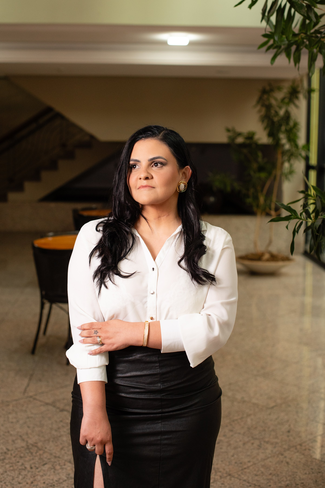
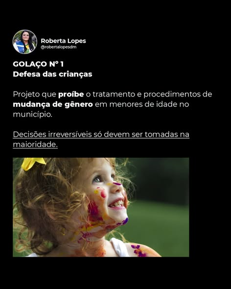
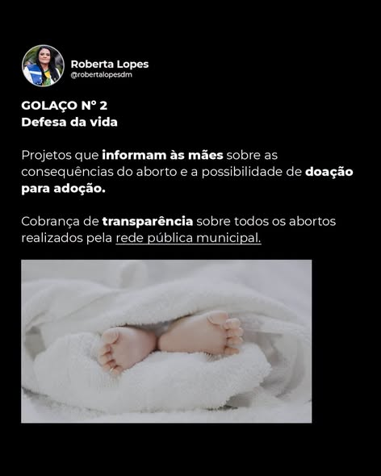
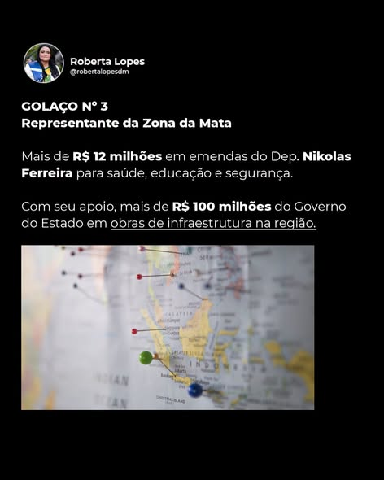
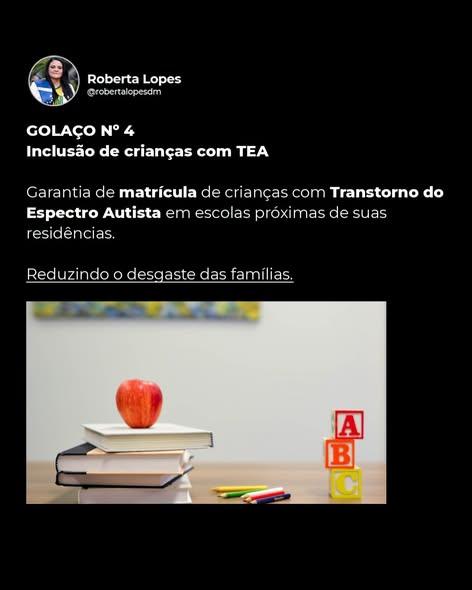
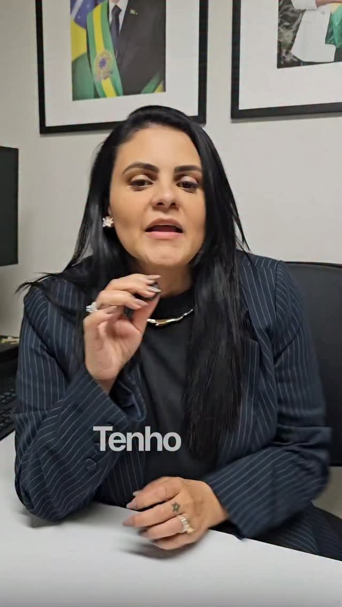

Vereadora mais votada por mulheres em Juiz de Fora, Roberta Lopes leva à Assembleia Legislativa a defesa da vida, da família, da segurança e da Zona da Mata Mineira.
Vídeo institucional para você conhecer a trajetória de Roberta Lopes.

Jornalista · Mãe · VereadoraNascida em 30 de janeiro de 1985 em Juiz de Fora, Roberta Lopes Alves é jornalista, cristã, casada e mãe de dois filhos. Antes de disputar um cargo eletivo, atuou por seis anos como assessora parlamentar nas esferas estadual e federal.
Em 2012, iniciou sua trajetória de liderança civil coordenando o grupo voluntário "Mães pela Escola sem Partido" em Minas Gerais. Depois, fundou e passou a coordenar regionalmente o movimento Direita Minas em Juiz de Fora, tornando-se uma das principais vozes conservadoras da Zona da Mata.
Em 2024, foi eleita vereadora pelo Partido Liberal (PL) com 7.924 votos: a segunda candidatura mais votada da cidade, a mulher mais votada do pleito e a única parlamentar declaradamente conservadora da legislatura.
"Tenho um propósito: representar quem, como eu, acredita na família, na fé e na liberdade."
Veja a trajetória completaUma atuação política construída sobre convicções — sem abrir mão de nenhuma delas.
Defesa dos valores cristãos e da família como base da sociedade.
Vida desde a concepção, apoio às mães e transparência sobre a rede pública.
Escolas mais seguras e combate à criminalidade em Juiz de Fora.
Ensino de qualidade, livre de ideologia, com valorização do professor.
Emendas e obras de infraestrutura para os municípios da região.
Projetos e conquistas que já mudam a vida de quem mora em Juiz de Fora e na Zona da Mata — e que Roberta quer levar para todo o Estado de Minas Gerais.




Treinamento de professores e funcionários em primeiros socorros e resposta a ataques nas escolas municipais.
Projeto que acaba com a revalidação periódica de laudos médicos de caráter definitivo para pessoas com deficiência.
Sua participação faz a diferença. Cadastre-se e acompanhe de perto a caminhada rumo a 2026.
Quero Fazer ParteOs números que consagraram Roberta Lopes como uma das principais lideranças conservadoras da cidade.
Transparência sobre os valores captados e destinados aos municípios da Zona da Mata Mineira, por indicação de Roberta Lopes e destinação do Deputado Federal Nikolas Ferreira.
Propostas já protocoladas na Câmara Municipal de Juiz de Fora — consulte o número oficial de cada projeto.
Estabelece a obrigatoriedade de orientar e esclarecer às gestantes sobre os riscos do procedimento abortivo e informa sobre a possibilidade de adoção pós-parto. Sancionado como Lei nº 15.359/2026.
Ver Lei 15.359/2026 na Câmara →Institui o Programa Escola Segura em Juiz de Fora, com treinamento de professores e funcionários em primeiros socorros e resposta a emergências. Sancionado como Lei nº 15.358/2026.
Ver Lei 15.358/2026 na Câmara →Institui prazo indeterminado para laudos médicos que atestem deficiência permanente, transtornos neuroatípicos e doenças raras. Sancionado como Lei nº 15.160/2025.
Ver Lei 15.160/2025 na Câmara →Garante a matrícula de estudantes com Transtorno do Espectro Autista (TEA) na escola municipal mais próxima da residência ou do trabalho dos responsáveis. Sancionado como Lei nº 15.163/2025.
Ver Lei 15.163/2025 na Câmara →Projeto que proíbe tratamento e procedimentos de mudança de gênero em menores de idade no município — ainda em tramitação, sem sanção/publicação como lei até o momento.
Resultados concretos em cada escala de atuação: cidade, estado e país.
Da infância em Juiz de Fora ao mandato na Câmara Municipal — e o próximo passo rumo à Assembleia Legislativa.
Roberta Lopes Alves nasce em 30 de janeiro de 1985. É em Juiz de Fora que forma suas bases familiares e estudantis, e desenvolve o interesse pela comunicação.
Graduada em Comunicação Social, atua como jornalista desde 2005. Consolida a vida familiar em Juiz de Fora — é cristã, casada e mãe de dois filhos — e acumula seis anos de experiência como assessora parlamentar nas esferas estadual e federal.
Coordena o grupo voluntário "Mães pela Escola sem Partido" em Minas Gerais. Depois, funda e coordena regionalmente o movimento Direita Minas, tornando-se referência conservadora na Zona da Mata.
Eleita pelo Partido Liberal (PL) com 7.924 votos — a segunda candidatura mais votada da cidade e a mulher mais votada do pleito. Foca seu mandato em segurança, saúde, valores cristãos e proteção à infância.
Pré-candidata a Deputada Estadual, Roberta se prepara para levar a voz da Zona da Mata e da direita conservadora mineira para dentro da Assembleia Legislativa de Minas Gerais.
Acompanhe o que a imprensa e as redes têm falado sobre o mandato de Roberta.
Espaço reservado para matéria real — envie o link ou o texto para publicarmos aqui.
Espaço reservado para matéria real — envie o link ou o texto para publicarmos aqui.
Espaço reservado para matéria real — envie o link ou o texto para publicarmos aqui.
Fotos do dia a dia de Roberta com o mandato, a militância e a Zona da Mata.

Documentos e materiais oficiais do mandato e da pré-campanha.
Resumo da trajetória e atuação parlamentar. arquivo pendente
Fotos oficiais, biografia e informações para imprensa. arquivo pendente
Textos completos dos principais projetos de autoria de Roberta. arquivo pendente
Agenda pública de eventos, audiências e visitas pela Zona da Mata.
Local e detalhes em breve.
Local e detalhes em breve.
Preencha seus dados e receba novidades do mandato e da pré-campanha diretamente no seu WhatsApp. Sua cidade da Zona da Mata também conta com representação direta.
Prefere falar direto? Fale com o gabinete pelo WhatsApp.
Siga o mandato, os bastidores e a pré-campanha em todas as plataformas.
Roberta Lopes atua ao lado de lideranças que compartilham os mesmos valores conservadores.
Ao lado do ex-presidente Jair Bolsonaro e do Deputado Federal Nikolas Ferreira, referências do movimento conservador em Minas Gerais e no Brasil.
Articulação direta com lideranças nacionais do Partido Liberal (PL) em defesa da pauta conservadora.
Peça uma providência, tire uma dúvida ou fale diretamente com a equipe de Roberta Lopes.
Câmara Municipal de Juiz de Fora
Juiz de Fora — MG · Zona da Mata Mineira
número do WhatsApp do gabinete pendente
Preencha o CEP para localizarmos automaticamente seu bairro e cidade. Ao enviar, você recebe um número de protocolo.
Protótipo visual do fluxo de solicitação. O acompanhamento com login e painel de status (como em sistemas de ouvidoria) será implementado diretamente no WordPress, com o gabinete.